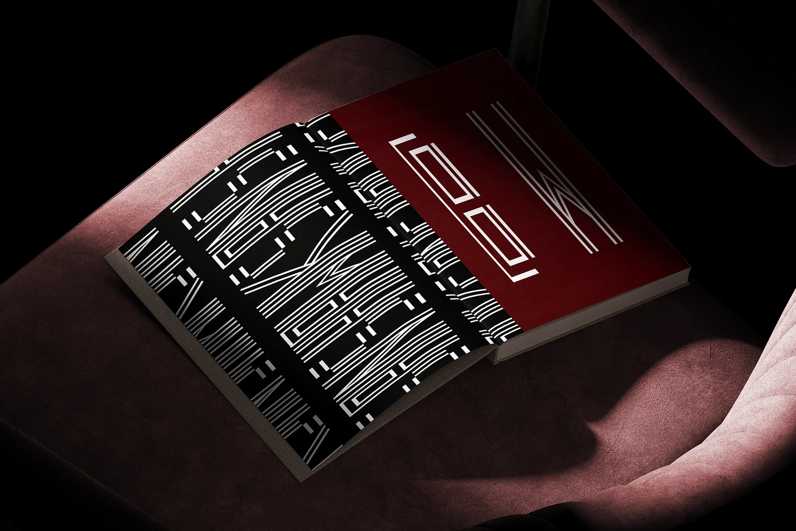
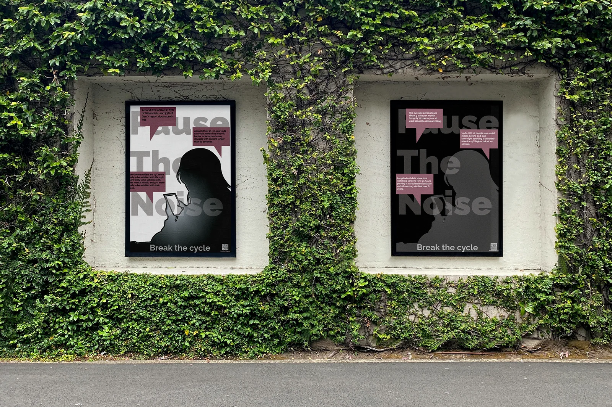
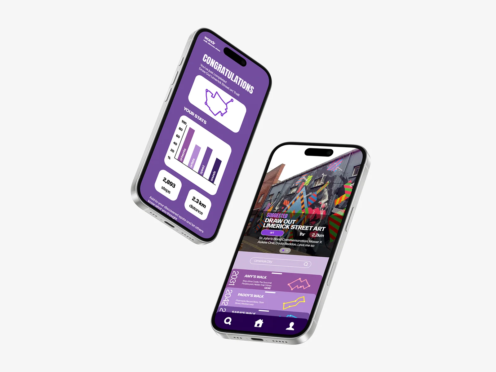
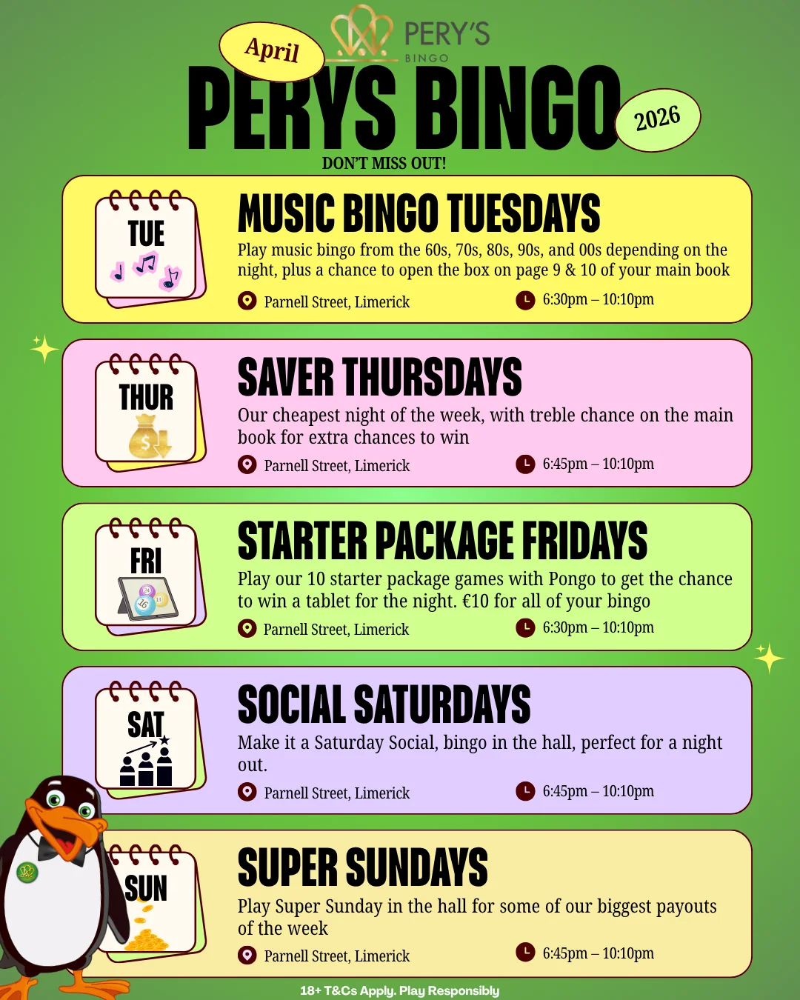
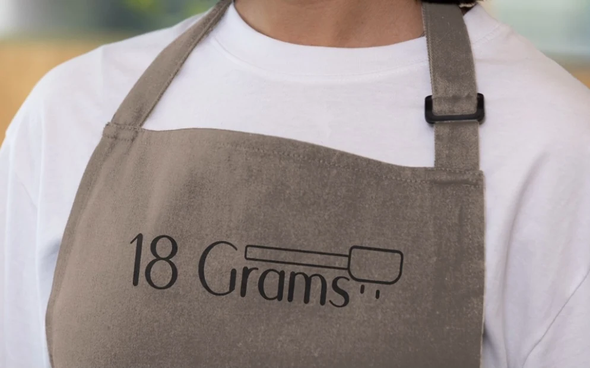
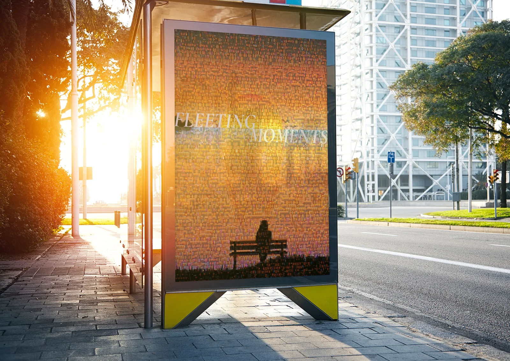

Type design · College project
Hawksans Typeface
An elongated modular display face, explored through a printed specimen.
Keira Haugh — Graphic Designer
I’m Keira Haugh, a graphic design and communications student. My work spans visual identity, typography and digital design.
Get in touch
Type design · College project
An elongated modular display face, explored through a printed specimen.

Web design · College project
A Figma website for a fictional creative collective to share artists’ work.

Campaign design · College project
A poster campaign and digital layouts built around the message “Break the cycle”.

UX/UI design · College project
A group project imagining Limerick’s cultural life as a walkable digital archive.

Poster design · College project
Layered handwriting and distorted letterforms meet in a monochrome street poster.

Campaign & social design · Placement project
Event posters, social campaigns and a weekly schedule from my placement at Parnell Plaza.

Brand identity · College project
An artisan coffee identity built around the precision of a single measure.

Poster design · College project
A photographic mosaic and a figure on a bench, framed in the light of a bus shelter.
About me
Keira Haugh — Graphic Designer
I’m a graphic design and communications student with a particular interest in how people find their way through apps and websites. My projects range from building a typeface out of repeating lines to designing a walking app with a group of other students.
Adobe Creative Cloud, Figma and Canva
I’d love to hear about graphic design projects, digital design opportunities and collaborations.
Inspiration
Reading, writing, music and gaming are a big part of where I find inspiration. I’m also drawn to thoughtful UX and UI design, especially the choices that make an app or website feel intuitive to use.
Contact
Have a project in mind, an opportunity to share, or an idea for a collaboration? I’d love to hear from you.
keira.haugh.work@gmail.com